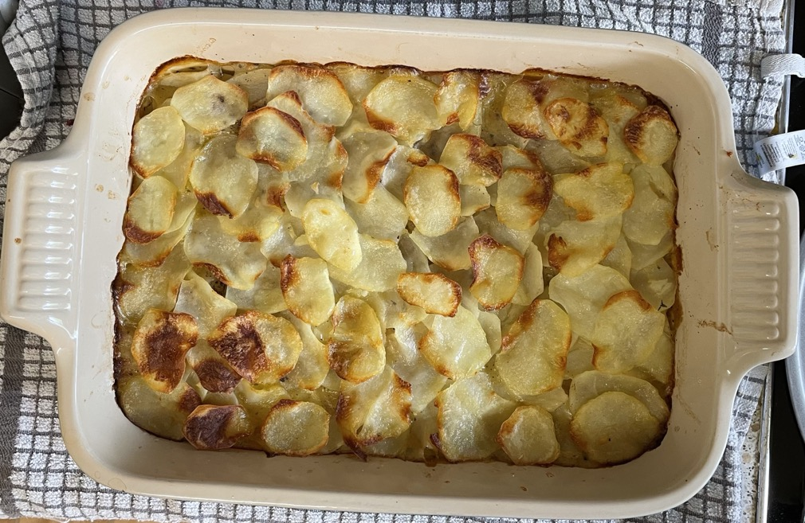

Vegetable hotpot
Potatoes
- Boil in water for 2 mins to soften
- 900g (after peeling) potatoes peeled and sliced with mandoline 2
- Allow to cool so easier to handle
Filling
-
Heat for 8 mins
- olive oil
- 2 onions
- Add and cook for 10 mins with lid on
- 4 carrots diced
- ½ swede diced
- 200g parsnips diced
- Sprinkle 25g plain flour and stir to coat veg
- Add and simmer for 20 mins
- 650ml stock
- 55g pearl barley
- 3 sprigs thyme
- ½ tsp thyme
- ¼ garlic salt
- ¼ celery salt
Hotpot
- Pour filling into oven dish
- Arrange potato slices on top, seasoning between layers
- Pour over 25g melted butter
- Cook at 180°C for 45-50 mins till potatoes are golden brown
Notes
Pics
